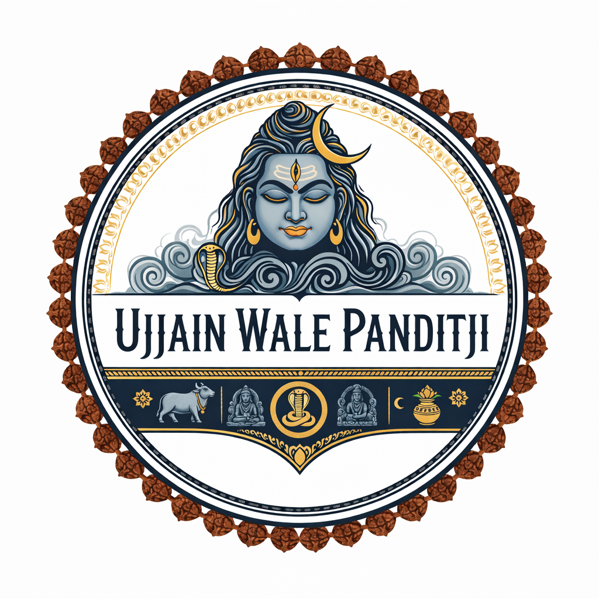
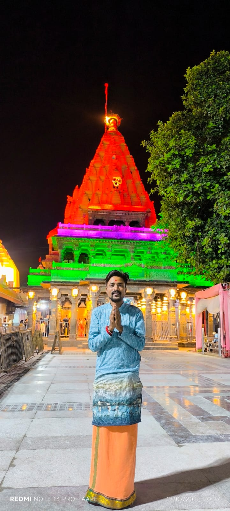

वैदिक परंपरा • आध्यात्मिक शुद्धता • शास्त्रीय विश्वास
यह वेबसाइट धार्मिक एवं आध्यात्मिक जानकारी हेतु है।
सभी ज्योतिषीय सेवाएँ आस्था आधारित हैं।
समस्त सामग्री कॉपीराइट द्वारा संरक्षित है।
सेवाएँ प्रशासनिक दिशा-निर्देशों पर निर्भर होंगी।

पं. अभिषेक उपाध्याय
15+ वर्षों का वैदिक ज्योतिष एवं कर्मकांड अनुभव